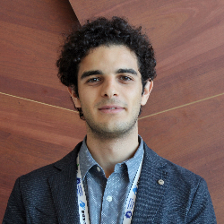

AEROSPACE ENGINEERING / AUTONOMOUS NAVIGATION
Pietro Califano.
PhD researcher in Aerospace Engineering
Visual navigation, SLAM, and multi-sensor state estimation.

About
Pietro Califano is a PhD researcher at DART Lab, Politecnico di Milano, and a guest researcher at the DFKI Robotics Innovation Center. His research focuses on autonomous navigation for small-body missions, with related work on state estimation for robotic platforms.
Previous experience includes Hera GNC activities at ESA ESTEC and the PoliSpace 6S CubeSat project.
Experience
Background & details- May–Nov 2026
Guest researcher
DFKI Robotics Innovation Center
- Dec 2023–present
PhD researcher
DART Lab · Politecnico di Milano
- Apr–Sep 2023
GNC intern · Hera mission
European Space Agency · ESTEC
- Dec 2021–Dec 2023
AOCS team member, then team leader
PoliSpace · 6S CubeSat